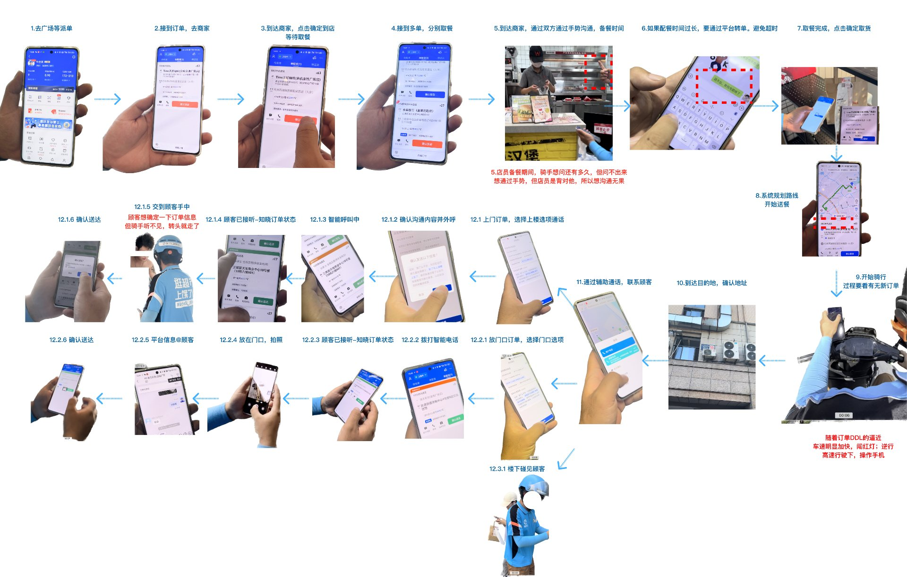
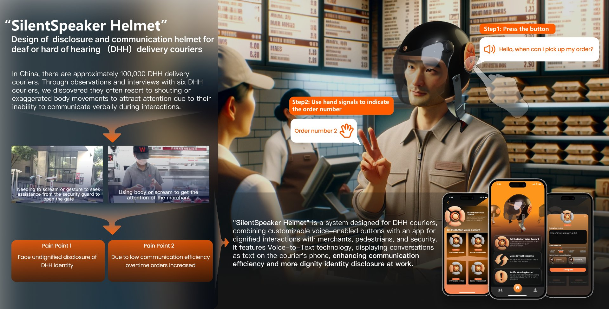
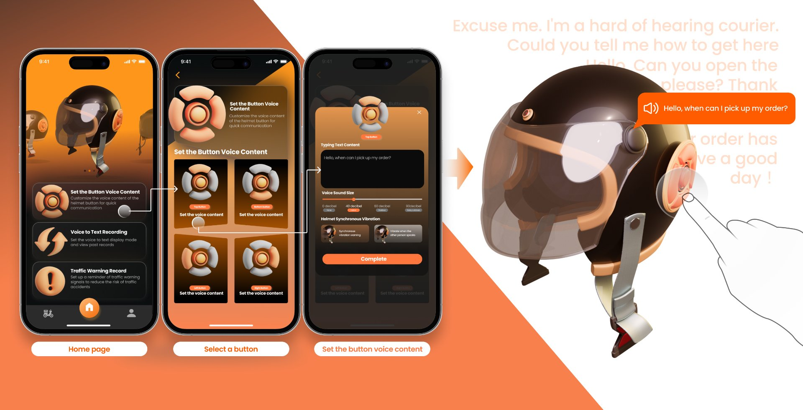
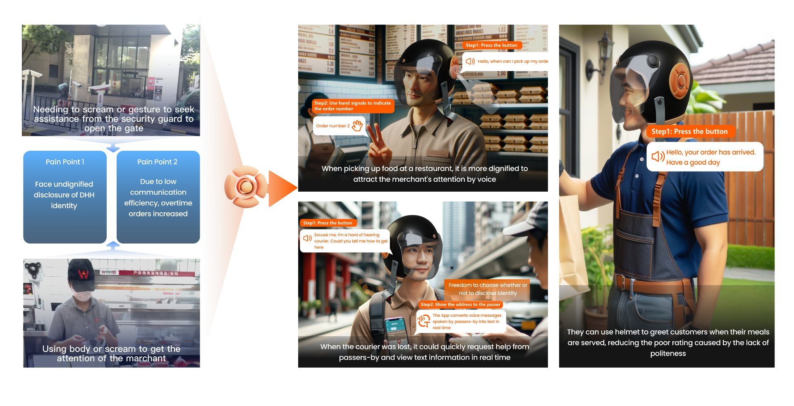

Silent Delivery
无声外卖 · 听障骑手的工作动机、实践与挑战
这篇 CHI'24 论文聚焦中国外卖行业里 听障 / 聋哑骑手（DHH Couriers）这一被忽视的群体， 研究他们如何借助平台技术与人工干预完成日常工作，并对外卖平台的无障碍设计提出建议。 它的起点，是我自己的一次错过 — 我没接到一通"虚拟号"打来的电话。
从一通没接到的电话开始
那天我点了一份外卖。一个陌生的"虚拟号码"打进来，我看了一眼 — 平台号、骚扰号常见，就没接。
十几分钟后，订单显示"超时"。骑手联系不上我，最后只能空跑一程。事后我才知道，那是一位听障骑手，平台为他生成的 AI 语音电话用的就是虚拟号。
他没有"打电话沟通"的能力，平台为他做了 AI 替代，可消费者却本能地不信任虚拟号。这场错过不是任何一方的错，但代价由最弱势的一方承担了。
那一刻我意识到：一个看似很周到的"无障碍设计"，可能在落地时被另一端的不信任彻底抵消。我想知道这种错过有多少，背后是怎样的群体。这就是这项研究的开始。
CHI'24 · 计算系统中的人为因素会议
CHI 是 HCI 领域顶级会议（CCF-A 类），每年录用率约 25%。
Silent Delivery: Practices and Challenges of Delivering Among Deaf or Hard of Hearing Couriers
中文题目：无声外卖 — 失聪及听力障碍外卖骑手的工作动机、实践与挑战
- 会议CHI '24（CCF-A）
- 发表2024 · ACM Digital Library
- 作者署名Shi Chen（导师）· Xiaodong Wang 等 7 人
- 我的角色学生一作 · 选题与设计建议核心贡献
- 论文长度17 页全长论文（Full Paper）
质性访谈 · 听他们怎么说
研究的核心是和听障骑手面对面对话，加入手语翻译、文字交流，把他们的真实经验逐字记录下来。
半结构化深度访谈
围绕"动机 / 实践 / 挑战"三大主题展开，访谈语料经过专业手语翻译辅助与多轮编码分析。
听障 / 聋哑骑手
来自中国主要外卖平台的一线骑手，覆盖不同城市、不同听障程度（重度听损 / 双侧听损 / 听障佩戴助听设备）。
主题归纳 · 多人编码
采用扎根理论的开放编码 → 轴心编码 → 选择编码三步法，多名研究员独立编码后交叉对比，确保信效度。
跟车一整天 · 把流程画出来
访谈之外，我们还跟着无声骑手实地跑单，把整个外卖配送的12 个关键节点逐一拍摄、标注，找出沟通卡点真正发生在哪里。

他们为什么选这行 · 怎么做 · 难在哪
为什么是外卖？
受访者普遍把外卖视为最适合自己的工作之一。
- 收入更好 · 多劳多得，不靠口才
- 工作满意度 · 自由时间、看到反馈
- 社群归属感 · 听障骑手群体互助
他们怎么"听"和"说"？
骑手主动用身份披露 + 平台工具 + 人工辅助三层组合应对沟通。
- 身份披露 · 平台标签 + 短信告知
- 无障碍工具 · AI 语音电话、语音转文字、电子沟通卡
- 人工干预 · 商家、保安、路人帮忙补位
技术之外，还差什么？
再好的无障碍工具，也敌不过用户对它的不信任。
- 骑行安全 · 听不到喇叭、警笛
- 多任务并发 · 取餐、导航、沟通同步进行
- 用户对 AI 语音电话的不信任 · 误判为骚扰
让平台的"无障碍"真的能落地
仅有工具不够 — 我们提出系统性建议，让 AI 工具、平台规则、用户认知一起协同。
让 AI 语音电话"被信任"
来电要明确告知"听障骑手 + AI 协助"身份，配合 App 内强提醒（红点 + 锁屏推送），把"虚拟号"从陌生骚扰提升为可识别的服务通道。
用户端的预知 + 共情设计
在用户接单页提前告知"骑手为听障人士"，让用户预先建立心理预期；用更友好的视觉语言替代冷冰冰的虚拟号。
骑行安全的多模态提醒
头盔 / 手机端提供视觉 + 振动双通道警示（车流、警笛、报警），降低无声骑手在路面上的生理风险。
规则上的"软容差"
针对身份已被识别为听障的骑手，在超时判定 / 客诉处理上引入有限的容错机制，把"沟通不畅 ≠ 服务失败"做制度化保障。
为什么这件事值得做
这篇论文不是为了完成一篇 CCF-A，而是希望让更多的"我"在面对那个虚拟号时，愿意按下接听键。 它面向的是开发者、平台规则制定者，也是普通用户 — 让所有人意识到：无障碍设计不只是一个技术问题，更是一个信任问题。
论文发表后，研究结论被多家媒体引用，也启发了浙大经济学院等团队后续的"听障骑手定量研究"。它正在变成一个真实的行业讨论。
SilentSpeaker Helmet
为听障骑手设计的"会替他说话"的智能头盔
论文不止于发现问题。研究中观察到的两个核心痛点 — "被迫无尊严地暴露身份"与"沟通低效带来超时" — 让我们意识到，仅靠平台内的工具并不够。 于是设计了 SilentSpeaker Helmet：一个把"按钮 + 语音 + APP"集成在头盔上的硬件 + 软件协同方案。

无尊严的身份暴露
骑手只能用大声呼喊或夸张肢体动作引起商家、保安注意。在公共场合反复"被迫暴露"自己听障身份，带来心理压力。
沟通低效 · 超时高发
因无法与商家、顾客顺畅沟通，取餐 / 问路 / 送达每个环节都比普通骑手慢，超时单显著增多，影响收入与评分。
头盔按钮 · 一键说话
头盔侧面集成可自定义语音内容的物理按钮，按一下播放预设的语句（"老板我来取餐"/"快递到了，请开门"），让骑手无需开口也能主动发起沟通。
APP 语音转文字
配套 APP 实时把路人 / 商家 / 顾客的回复转写成文字显示在手机屏幕上，让"听不见"不再是断点，让骑手能跟上对话。
交通预警 · 安全护盾
针对论文里提到的"骑行安全"问题，头盔与 APP 同步检测车流声 / 警笛 / 喇叭，转化为头盔振动与视觉提醒，降低听障骑手路面风险。
三步设置一句你想说的话

从研究痛点 · 到三个真实场景

让骑手"自己决定要不要被听见"
SilentSpeaker 的核心不是"代替听障人群说话"，而是把"是否暴露身份"的开关交还给他们。 他们可以选择按下按钮主动发起沟通，也可以选择保持沉默 — 这正是无障碍设计里最核心的"尊严感"。
这也呼应了我那次"没接电话"的反思：技术真正的温度，不在于多炫的 AI，而在于让被服务的人保有尊严。
这项研究教给我什么
先看见，再设计
真正的"边缘人群"不是统计学的边缘，是我们日常生活里的盲区。看见他们，是产品设计的第一步。
技术 ≠ 善意
AI 工具落地的瓶颈往往不在技术本身，而在它如何融入既有的社会信任结构里。
人机协同
即使最先进的 AI，也仍然需要人类在关键节点的"补位"。这是我后来做 AIGC 产品时的底层信念。